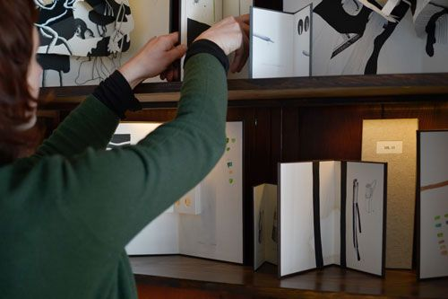

Biblioteca Natural no Armário, 2016

A Coleção Montanha Mágica, Museu do Caramulo, 2026
Natural Library | Biblioteca Natural
My Natural Library is composed by an infinite number of books, all unique copies, which define and proceed from a fictional research work in the field of natural sciences. The Library is part of a broad artistic project in which I use various media to create a narrative where I question the relationship between the human and the natural.
This art project started in 2014 and has been shown in different venues and configurations.
A minha Biblioteca Natural é uma série infinita de livros, todos exemplares únicos, que definem e procedem de um trabalho ficcional de pesquisa no domínio das ciências da natureza. A Biblioteca insere-se num projeto artístico alargado no qual eu me aproprio de vários media para criar uma narrativa onde problematizo a relação entre o humano e o natural.
O projeto iniciado em 2014 tem sido exposto em locais diversos e em diferentes configurações.